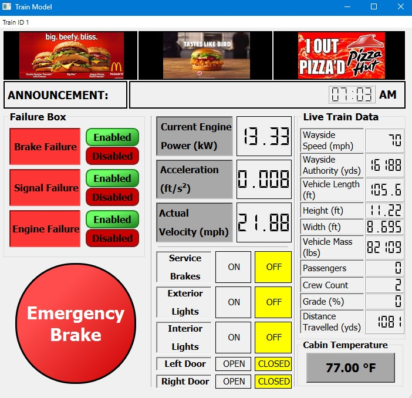

Train System Simulation
Full-scale rail system simulation with centralized traffic control, wayside signaling, and physics-based train motion at 0.1-second real-time control resolution.
Systems Software
Real-Time Systems
MVC Architecture
Simulation
View the demo ↓
0.1s
Control Resolution
4
System Modules
MVC
Architecture Pattern

Project Overview
This project is a comprehensive rail system simulation built as a major software engineering course deliverable. It models the full operational stack of a modern train network — from the centralized dispatcher all the way down to individual train physics — in a cohesive, real-time GUI application.
System Architecture
- Centralized Traffic Control (CTC) Office: Dispatches trains, manages schedules, monitors occupancy blocks, and overrides wayside signals. Implemented as a standalone PyQt GUI module communicating over an internal message bus.
- Wayside Controller: Manages track block occupancy, switch positions, and speed authority — enforcing safe separation between trains using a PLC-style logic engine updated every control tick.
- Track Model: Maintains a full graph of track blocks, grades, curves, stations, and infrastructure state — serving as the shared ground truth for all modules.
- Train Controller & Physics Model: Implements onboard speed regulation with brake authority, a physics-based kinematic model (acceleration, drag, grade effects), and passenger load simulation.
Key Design Decisions
- Real-time MVC architecture: Each system module follows a strict Model-View-Controller separation, enabling independent testing of business logic without GUI dependencies.
- 0.1-second simulation tick: A master clock drives all module updates in lockstep — matching industry control loop frequencies and keeping physics models numerically stable.
- PyQt event loop integration: The simulation timer runs inside Qt's event loop, ensuring GUI responsiveness while maintaining deterministic simulation timing.
Tech Stack
Module hierarchy
CTC Office (Dispatcher)
Wayside Controller
Track Model
Train Controller
Physics Engine